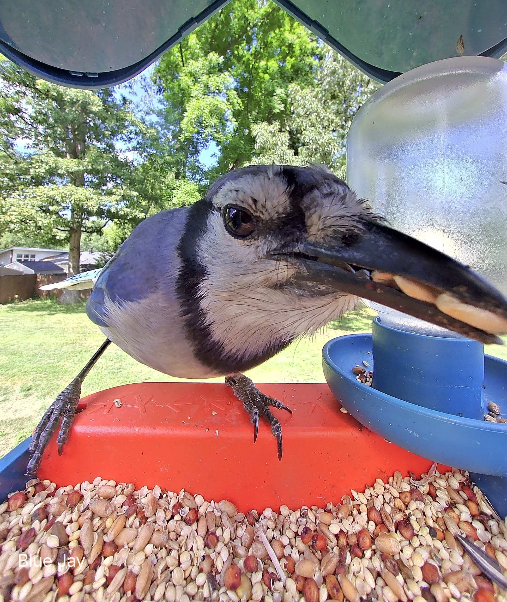
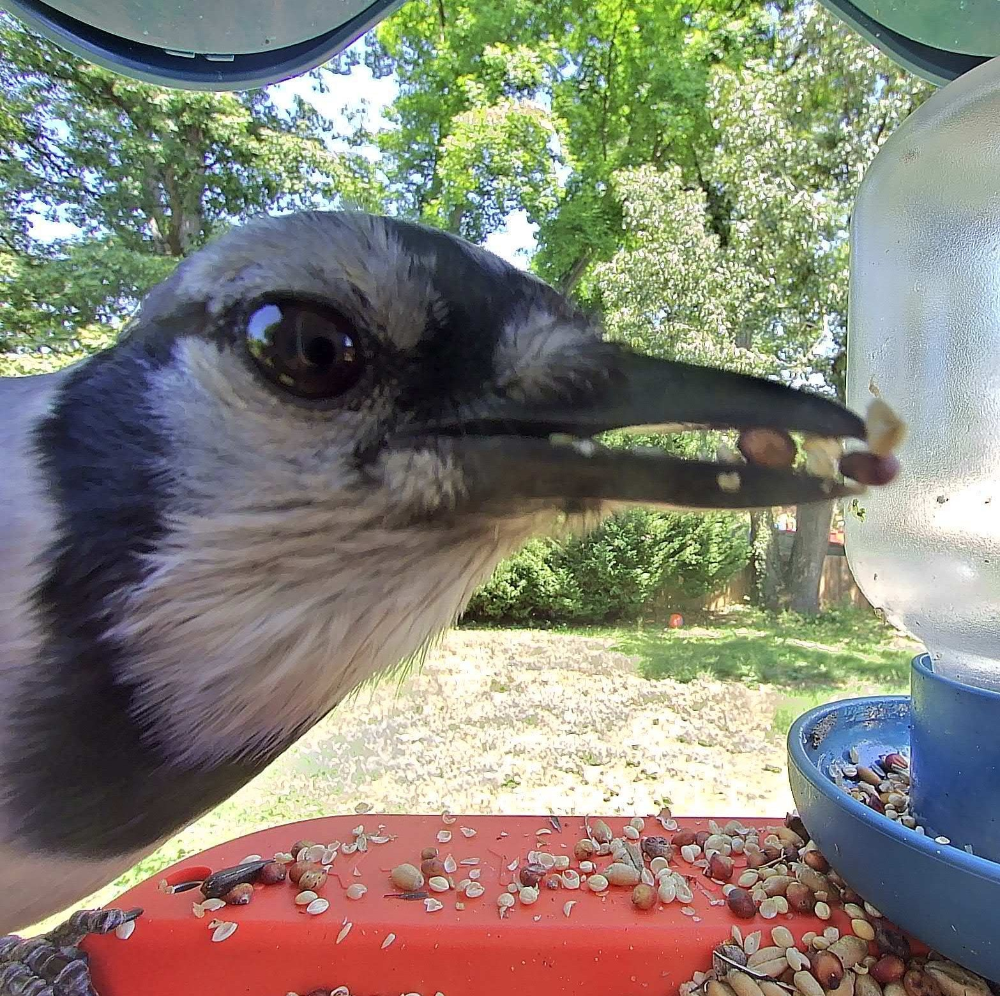

This author admits to bias when it comes to our dashing Prince Bluejay. His jewel-tone feathers and white-tipped wings make him the prize of our eyes. But with nobility comes hardship. Prince Bluejay spends the majority of his time surveilling the neighborhood from above, untouchable to the commoners below. His visits to the tray are infrequent, but he always leaves with his beak full. Any lady bird that selects our dashing Prince will either become accustomed to such a schedule, or accept a life flooded with independence. Read more about Bluejays
Heavy is the head that holds the crown.
